Información Personal🌍
Hola mi nombre es Ivette Nicol soy estudiante del Instituto Politecnico de Haina y soy de la mención de Informática de 4TO
Me Gusta
La fotografía, me encanta todo lo relacionado con plasmar un paisaje, lugares importantes dentro de una cámara.
Me Gusta
El voleibol ya que me siento super bien al hacer actividad fisica y también aprendo el significado de ser un equipo.
Me Gusta
Amo cantar me encanta el hecho de liberar mi estrés a tráves de mis cuerdas vocales.
Manhwa De Reencarnación
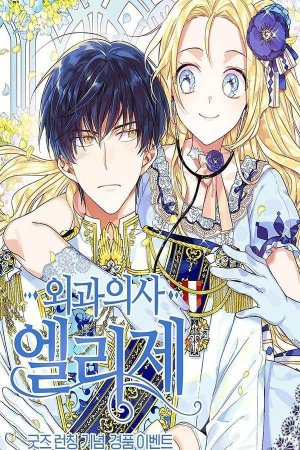
En su primera vida asumió una personalidad cruel cometiendo crímenes que la llevaron a ser quemada en la hoguera. En su segunda vida intentó redimirse siendo una cirujana de renombre, pero debido a un accidente aéreo donde pierde la vida regresa a su primera vida donde esta vez decide cambiarlo todo y convertirse en una doctora.
Docot Elise
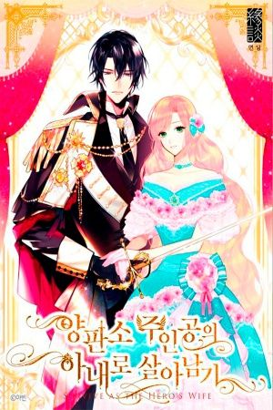
Canaria se reencarna como la villana de una novela popular cliché. Basada en la novela, está destinada a ser ejecutada, pero ¿Puede evitar que esto suceda antes de que sea demasiado tarde...?
Sobreviviendo Ante El Héroe
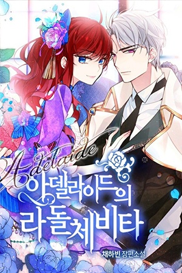
17 años después de su reencarnación, Adelaide escucha que un viajero dimensional ha llegado al palacio imperial. Justo la emoción que mi aburrida vida necesita, ¡eso pensó!
La Dulce Vida De Adelaide
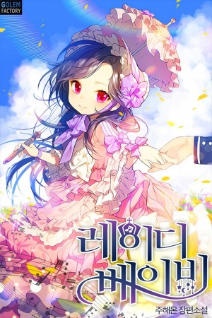
Todo lo que amaba se le fue arrebatado ante sus ojos, Calíope quien ya se había rendido ante la vida conoce a una misteriosa mujer que le dará la oportunidad de cambiar su destino regresandola al pasado en forma de una bebe, ¿podrá ella cambiar su destino y el de su familia?
La Dama Bebe
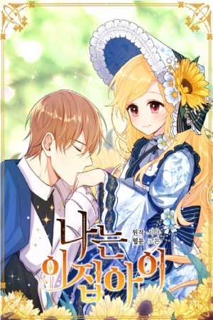
"Ojos rosas" siempre ha vivido una vida relativamente normal, Con dos excepciones: primero, ha ganado recuerdos de su vida anterior como Seo Young, y segundo, es la hija ilegítima de alguien. Sin embargo, un día, cuando ella cumple 11 años, su madre prostituta la lleva al duque del imperio y le reclama que es su hija. A pesar de que parece no creerle, compra "ojos rosas" por 20,000 monedas de oro. Con eso, comienza su nueva vida como "Estela". Pero, ¿qué es lo que realmente la espera? ¿Y es realmente una niña de esta casa?
Soy Hija De Esta Casa
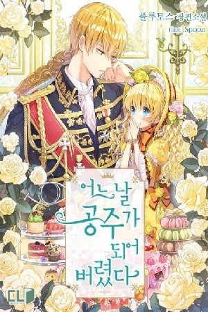
¡Un día abrí mis ojos y me había convertido en una princesa! ¡Es bueno nacer con una cuchara de oro en la boca, Pero ¿Soy una princesa que muere en manos de su padre? ¡El emperador de sangre fría Claude!
Princesa Encantadora
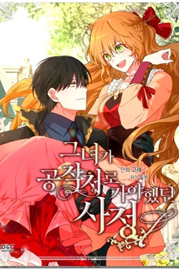
¿Envenenada hasta la muerte por su propio prometido? ¡Eunha no se despertó en la historia de una novela para ser asesinada de nuevo como un personaje secundario mas! Para cambiar su historia, ella necesita ... fingir 6 meses ser la novia falsa del protagonista masculino de la novela, el Duque Noah Wynknight. ¡¿Pero este demonio de un hombre de corazón frío y rostro de ángel realmente la ayudará a evitar otro final desafortunado ?!
La razón por la que Raeliana terminó en la mansión del duque
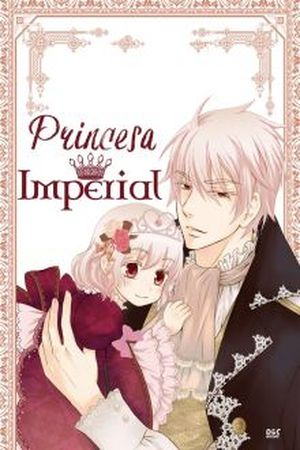
El emperador tirano nunca permitió que sus amantes le dieran un hijo, todo estaba finalmente controlado, si nacían los mataba junto con su madre. Hasta que un desliz permitió que una niña se salvara... Una maldición, que lleva un chupón. Una maldición, con su mismo rostro. Una maldición, que era diferente. Una maldición, que le puso de nombre Ariadne. Y ella es su unica hija
Princesa Imperial
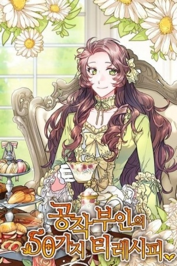
Abrí mis ojos y me convertí en duquesa. Pero es extraño, soy una duquesa que es acosada por las doncellas y desatendida por su marido. Solo pensé en vivir tranquilamente con la ayuda del té. “Podre tomar otra taza de té la próxima vez”. La actitud del esposo frio ¿no es extraña?
Las 50 Recetas De Té De La Duquesa
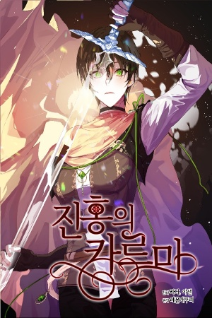
Kasiya Del Roman es un soldado diseñada para convertirse en una asesina. Ella perdió sus emociones humanas hace mucho tiempo y vivió su vida como una herramienta simple, solo para ser desechada en sus últimos momentos. Ni siquiera pudo tener una muerte adecuada ya que abrió los ojos en el campo de batalla de un mundo diferente. ¿Vivirá la misma vida que tuvo en su mundo original?
Karma Carmesí
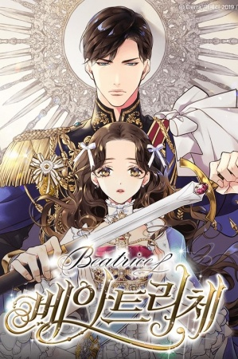
Cuando el Reino de Elpasa cayó ante la espada del héroe más grande del Imperio, para sobrevivir, la princesa Beatriz asumió el disfraz de "Chloe", una esclava. Pero entonces, ella llamó la atención de ese mismo héroe ...
Beatrice
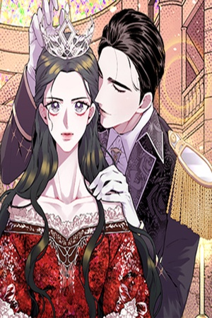
"Nunca amaré al Emperador". Mi hermana Neil, quien se convirtió en la Reina del Emperador después de haber soñado con cuentos de hadas y verdaderos amores, regresó divorciada y acusada de alta traición. Nuestra familia, los Rochesters, fueron ejecutados sin piedad. Pero por algún milagro, volví a tiempo antes de que fuera seleccionada como candidata a la Reina del Emperador. Si me convierto en reina en tu lugar, tú y nuestra familia no necesitan sufrir. Esta vida tuya puede tener un final feliz, hermana. Lo prometo.